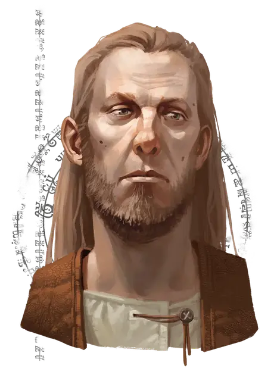

Дарз Хелгар
Darz Helgar
Средний Гуманоид (Человек иллюсканец), нейтральный, именной НИП

Класс Доспеха 12
Хиты 27 (5к8 + 5)
Скорость 30 футов
| мод | спас | ||
|---|---|---|---|
| СИЛ | 15 | +2 | +2 |
| ЛОВ | 15 | +2 | +2 |
| ТЕЛ | 12 | +1 | +1 |
| мод | спас | ||
|---|---|---|---|
| ИНТ | 10 | +0 | +0 |
| МДР | 11 | +0 | +0 |
| ХАР | 11 | +0 | +0 |
Навыки Запугивание +2, Ловкость рук +4, Скрытность +4
Чувства пассивное Восприятие 10
Языки Общий
Опасность 0
Бонус мастерства +2
Особенности
Скрытая атака (1/ход). Дарз причиняет дополнительный урон 7 (2к6), когда попадает по цели атакой оружием, совершая бросок атаки с преимуществом или когда цель находится в пределах 5 футов от дееспособного союзника Дарза, и у Дарза нет помехи к броску атаки.
Информация для отыгрыша. В молодости Дарз был членом Воровской Гильдии Занатара в Глубоководье. После 10 лет тюрьмы за свои преступления, он оборвал все связи в городе и переехал на север чтобы стать сторожем стоянки караванов.
Идеал. : «От своего прошлого можно бежать, но нельзя скрыться.»
Привязанность. : «Я начал новую жизнь в Триборе. И в этот раз я не убегу.»
Слабость. :«Я ни о чём не жалею. Я делаю всё, что требуется, чтобы выжить.»
Действия
Короткий меч. Рукопашная атака оружием: +4 к попаданию, досягаемость 5 фт., одна цель. Попадание: 5 (1к6+2) колющего урона.
Праща. . Дальнобойная атака оружием: +4 к попаданию, дистанция 30/120 фт., одна цель. Попадание: 4 (1к4+2) дробящего урона. Дарз носит с собой двенадцать камней для пращи.